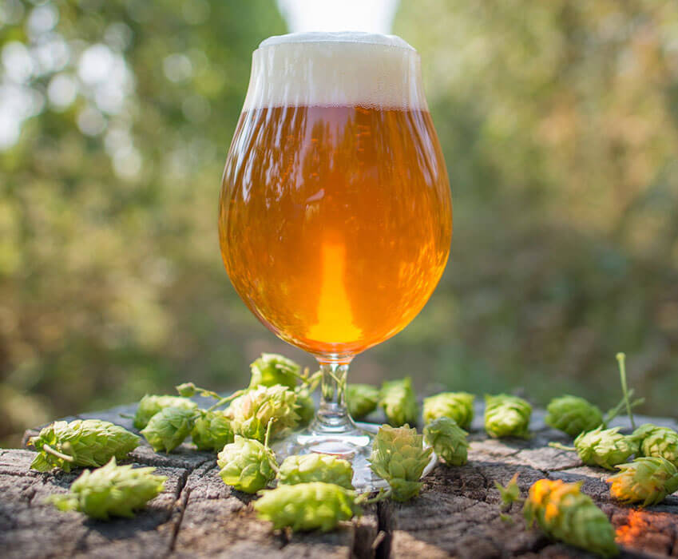
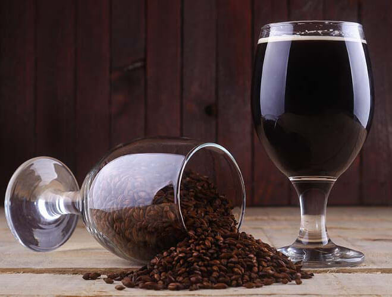
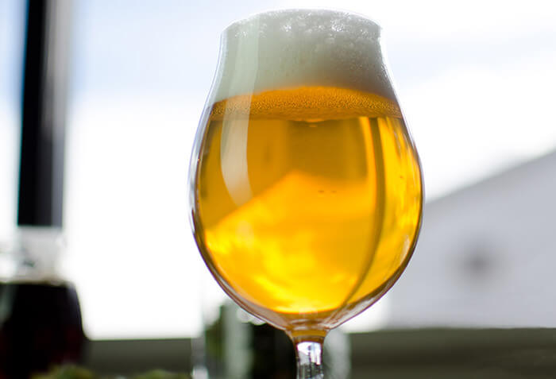
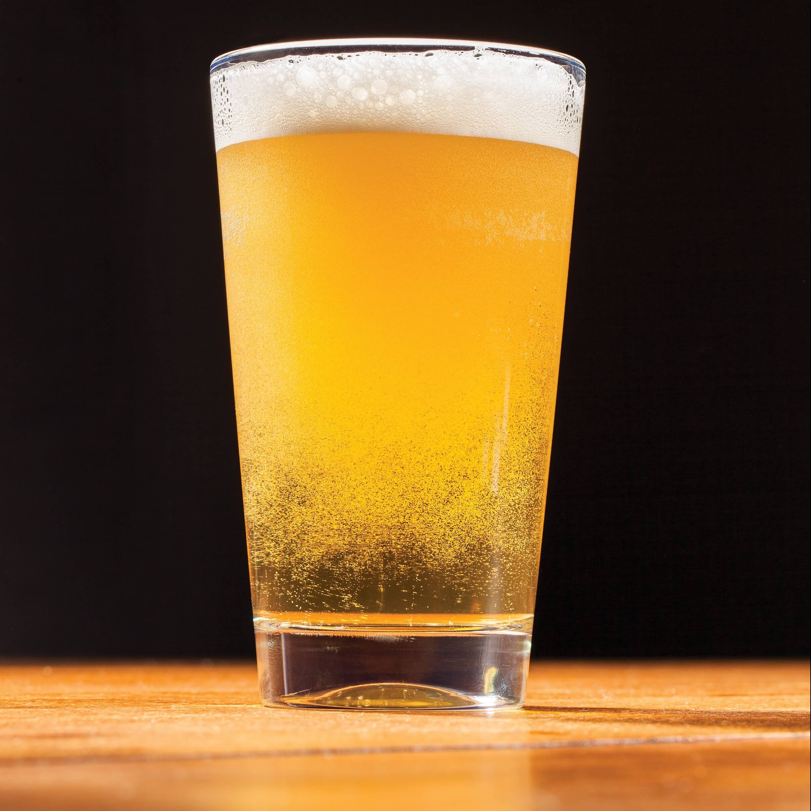

The American IPA is a different soul from the reincarnated IPA style. More flavorful than the withering English IPA, color can range from very pale golden to reddish amber. Hops are typically American with a big herbal and / or citric character, bitterness is high as well. Moderate to medium bodied with a balancing malt backbone.
Porter
 Inspired from the now wavering English Porter, the American Porter is the ingenuous creation from that. Thankfully with lots of innovation and originality American brewers have taken this style to a
new level. Whether it is highly hopping the brew, using smoked malts, or adding coffee or chocolate to complement the burnt flavor associated with this style. Some are even barrel aged in Bourbon or whiskey barrels. The hop bitterness range
is quite wide but most are balanced. Many are just easy drinking session porters as well.
Pilsner
 Classic German Pilsners are very light straw to golden in color. Head should be dense and rich. They are also well-hopped, brewed using Noble hops such has Saaz, Hallertauer, Hallertauer Mittelfrüh,
Tettnanger, Styrian Goldings, Spalt, Perle, and Hersbrucker. These varieties exhibit a spicy herbal or floral aroma and flavor, often times a bit coarse on the palate, and distribute a flash of citrus-like zest--hop bitterness can be high.
Light Lager
 The Light Lager is generally a lighter version of a breweries premium lager, some are lower in alcohol but all are lower in calories and carbohydrates compared to other beers. Typically a high amount
of cereal adjuncts like rice or corn are used to help lighten the beer as much as possible. Very low in malt flavor with a light and dry body. The hop character is low and should only balance with no signs of flavor or aroma. European versions
are about half the alcohol (2.5-3.5% abv) as their regular beer yet show more flavor (some use 100% malt) then the American counterparts. For the most part this style has the least amount of flavor than any other style of beer.